Для преобразования чертежей в другой формат применяется команда Экспорт меню Файл
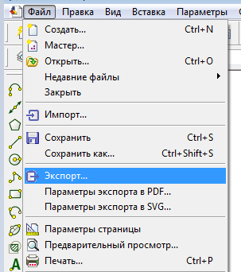
После запуска команды откроется окно сохранения чертежа, в котором выбирается необходимый формат из доступных в раскрывающемся списке.
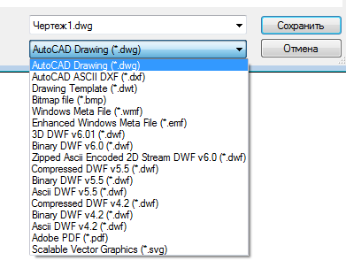
Перед преобразованием чертежей в формат
.pdf или .svg откройте окно настройки параметров экспорта (меню Файл) и выполните необходимые настройки
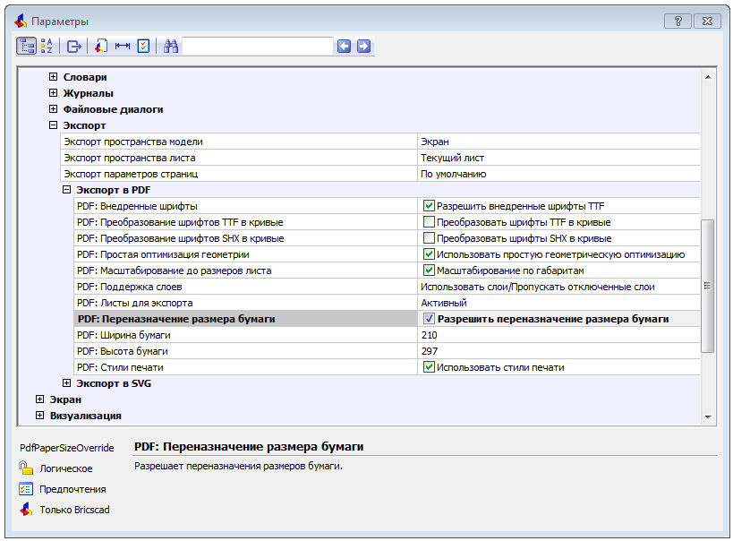
7.2. Объединение элементов чертежа в группу
Можно объединить несколько элементов чертежа в одну группу. При этом, в отличие от объединения в блок, отдельные элементы доступны для редактирования.
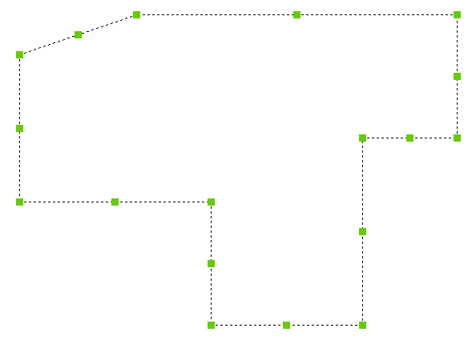
Зайдите в меню Сервис и выберите
Группа
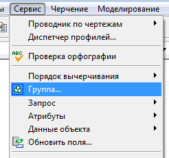
7.2. Объединение элементов чертежа в группу
Укажите объекты для создания группы и дайте ей имя (или оставте безимянной). В дальнейшем, при необходимости, в группу можно добавлять или удалять объекты.
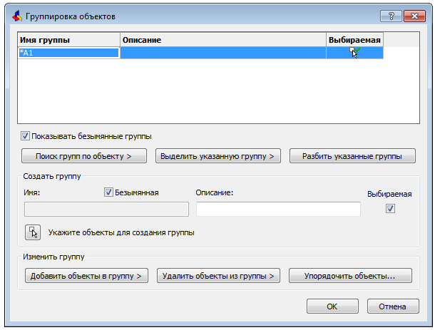
7.3. Определение площади и периметра фигуры
Выберите Сервис — Запрос —
Площадь
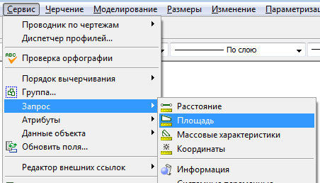
Последовательно укажите все вершины фигуры или наберите в командной строек e (Объект) с дальнейшим указанием фигуры. Второй вариант не подходит, если фигура создана из отдельных отрезков.
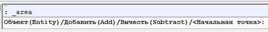
7.4. Вставка таблицы
Выберите Черчение — Таблицы
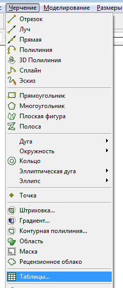
Можно создать новую таблицу или импортировать данные из файла с расширением .csv (Excel — сохранить как).
При создании новой таблицы укажите параметры для столбцов и строк.
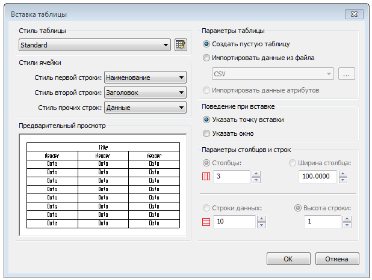
7.4. Вставка таблицы
По двойному щелчку по ячейке таблицы открывается окно форматирования текста
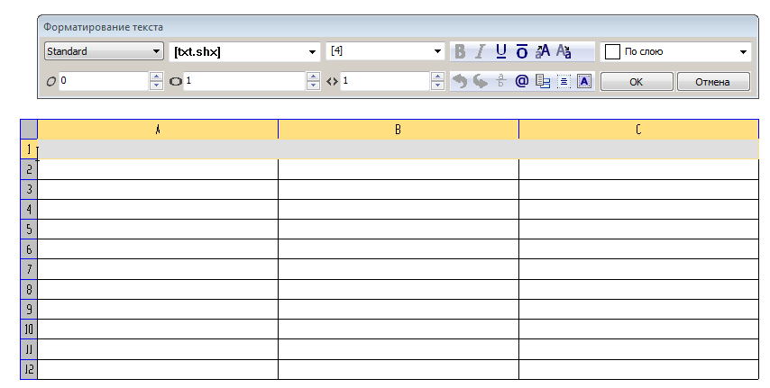
7.4. Вставка таблицы
По щелчку по ячейке таблицы открывается окно форматирования таблицы
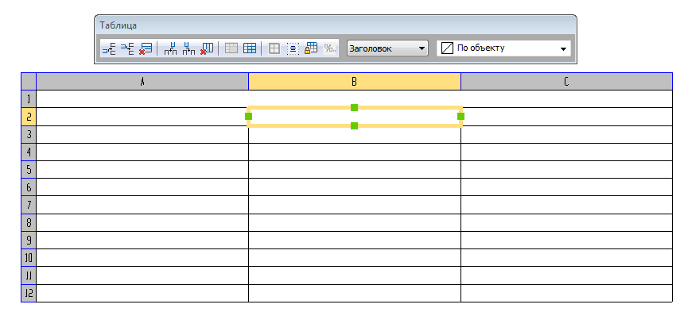